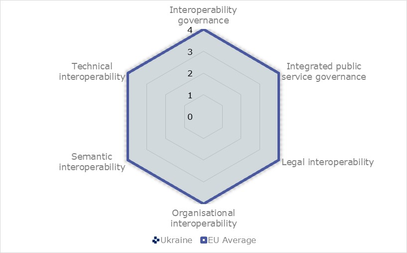
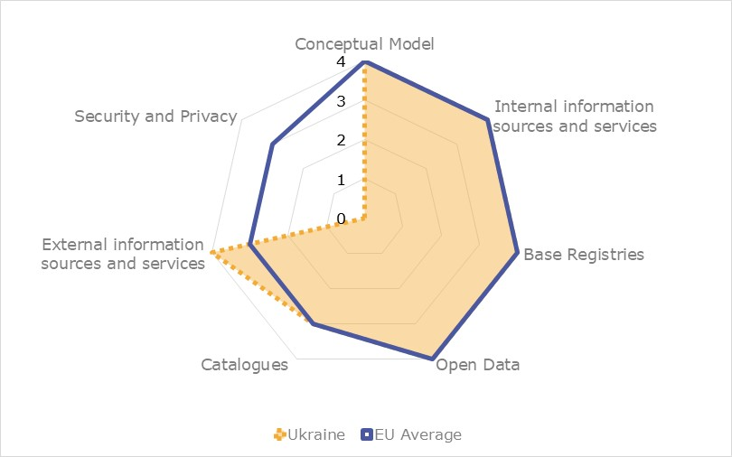

ISA2
Digital Public Administration factsheet 2021
Ukraine

2 Digital Public Administration Highlights 10
3 Digital Public Administration Political Communications 13
4 Digital Public Administration Legislation 21
5 Digital Public Administration Governance 30
6 Digital Public Administration Infrastructure 35
7 Cross-border Digital Public Administration Services 44
Please note that the data collection exercise for the update of the 2021 edition of the Digital Public Administration factsheets took place between March and June 2021. Therefore, the information contained in this document reflects this specific timeframe.

Country
Profile
1
Population: 41408239 inhabitants (2021)
GDP at market prices: UAH 4194102* (2020)
GDP per inhabitant in PPS (Purchasing Power Standard EU 27=100): N/A
GDP growth rate: -4.2 % (2020)
Inflation rate: 2.7%* (2020)
General government gross debt (Percentage of GDP): 60.8%* (2021)
General government deficit/surplus (Percentage of GDP): -0.7%* (2021)
Area: 603 628 km2
Capital city: Kyiv
Official EU language: Ukrainian
Currency: UAH
Source: UkrStat, * Ukrainian Ministry of Finance (last update: July 2021)
At the present moment the Digital Economy and Society Index (DESI) does not collect data for Ukraine.
However, the following are some relevant statistics for Ukraine:
Out of those using the internet***:
Source:
* ICT statistics on Ukraine (Latest data available: 2019) –ITU;
** Research of Factum Group made on request of Ukrainian Internet Association (2019);
*** Ministry of Digital Transformation survey on digital skills and Internet use in Ukraine (2019).
In 2017, the European Commission published the European Interoperability Framework (EIF) to give specific guidance on how to set up interoperable digital public services through a set of 47 recommendations. The picture below represents the three pillars of the EIF around which the EIF Monitoring Mechanism was built to evaluate the level of implementation of the EIF within the Member States. It is based on a set of 71 Key Performance Indicators (KPIs) clustered within the three main pillars of the EIF (Principles, Layers and Conceptual model), outlined below.

Source: European Interoperability Framework Monitoring Mechanism 2020
For each of the three pillars, a different scoreboard was created to breakdown the results into their main components (i.e. the 12 principles of interoperability, the interoperability layers and the components of the conceptual model). The thematic areas are evaluated on a scale from one to four, where one means a lower level of implementation and 4 means a higher level of implementation. The graphs below show the result of the second EIF Monitoring Mechanism data collection exercise for Ukraine in 2020.

Source: European Interoperability Framework Monitoring Mechanism 2020
Ukraine’s results in Scoreboard 1 show an overall good implementation of the EIF principles, despite the lack of data for the Principle 6 (User-centricity), Principle 9 (Multilingualism) and Principle 10 (Administrative simplification). Ukraine scores above the European average for the Principle 1 (Subsidiarity and Proportionality) and Principle 7 (Inclusion and accessibility), both with a maximal score of 4, and meets the European average for every other principle. The mid-upper performance of Ukraine for Principle 12 indicates that Ukrainian public administrations could improve their evaluation of the effectiveness and efficiency of different interoperability solutions and technological options considering user needs, proportionality and balance between costs and benefits (Recommendation 19).
Source: European Interoperability Framework Monitoring Mechanism 2020
The Ukrainian results for the implementation of interoperability layers assessed for Scoreboard 2 show a good performance. Ukraine scores a maximal score of 4 for every interoperability layers. Despite the score of 4 obtained for the implementation of interoperability governance, Ukrainian public administrations could improve the implementation of the Recommendation 24, which independently gets a lower score of 1, by more actively participating in the standardisation work relevant to their needs to ensure their requirements are met.
Source: European Interoperability Framework Monitoring Mechanism 2020
Ukraine’s scores assessing the Conceptual Model in Scoreboard 3 show a good performance in the implementation of all recommendations, despite the lack of data for security and privacy. In line with the European average, Ukraine gets a maximal score of 4 for open data, base registries, internal information sources and services as well as the conceptual model itself, and an upper middle score of 3 for catalogues. Higher than the European average, Ukraine obtains a maximal score of 4 for both external information sources and services. In order to reach a higher performance in catalogues, a potential area of improvement could be to enhance the implementation of Recommendation 44, on the provision of catalogues of public services, public data, and interoperability solutions and the use of common models for describing them.
Additional information on Ukraine’s results on the EIF Monitoring Mechanism is available online through interactive dashboards.
This section of the factsheet is meant to presents the country performance on the main eGovernment indicators according to the latest eGovernment Benchmark report, which monitors the development of eGovernment in Europe.
At the present moment, the report does not analyse the state of play of eGovernment in Ukraine.

Digital Public Administration Highlights
2
Digital Public Administration Political Communications
In December 2020, the Ministry of Digital Transformation of Ukraine (MDT) presented the updated roadmap on integration of Ukraine into EU digital single market for 2021-2023. The updated roadmap was developed based on the recommendations of the European Commission, revolutionary changes in EU law and provides for the introduction of the latest digital norms and standards of the EU. In particular, the implementation of 75 acts of EU law (25 basic and 50 implementing).
In September 2020, the Ministry of Digital Transformation of Ukraine (MDT) developed and placed for public discussion the draft national strategy of the broadband Internet access development in Ukraine. The concept provides MDT’s vision and necessary steps needed to provide at least 95% of Ukrainians with the access to high-speed fixed and mobile Internet.
In March 2021, the Ministry of Digital Transformation of Ukraine (MDT) started developing the draft national strategy on development of eID and trust services in Ukraine.
Digital Public Administration Legislation
In March 2021, Verkhovna Rada of Ukraine (Ukrainian Parliament) adopted the law No 4355 On State Demographic Registry and Documents that Confirm Ukrainian Citizenship or Identify the Person which legally regulates the digital ID cards in Diia mobile app. Starting from 23 August 2021, digital national and international ID cards which are available on the Diia mobile app will have the same legal power as paper-based documents and can be legally used to identify the person. Digital ID cards will be legally used to identify the person or citizenship.
Digital Public Administration Governance
Established in 2019, the Ministry of Digital Transformation of Ukraine is the main body responsible for the policy formulation and implementation in the sphere of digital public administration and information society creation.
In 2020, the Ministry of Digital Transformation of Ukraine introduced the new management structure of digital transformation in Ukraine, including the introduction of a Chief Digital Transformation Officer position both at the state (in each central ministry) and regional (each regional public administration and city over 100 000 of citizens) levels.
Digital Public Administration Infrastructure
With the creation of the Ministry of Digital Transformation of Ukraine, Ukraine has begun a process of standardising and unifying all eServices within a single efficient, user-facing digital platform called Diia (State and Me) with its related User’s eCabinet which were introduced in April 2020.
As of March 2021, there are more than 50 eServices available on the Diia portal. During the year after its launch, the portal visited 3,8 million unique users.
There are nine public registries integrated into the User’s eCabinet on the Diia portal and thus, inside the portal’s eCabinet, registered users can find information about their vehicle ownership, land ownership, immovable property ownership and private entrepreneurship status, information about their debts (if they exist), voter information as well as employment records.
The Diia mobile application was introduced two months before the Portal, in February 2020. The first user-friendly eServices contained in Diia mobile application are nine digital documents (i.e., the electronic driver’s licenses, the electronic vehicle registration documents (vehicle technical passports), the passport of the citizen of Ukraine (ID card), the passport of the citizen of Ukraine for traveling abroad, the student ID, the car insurance, individual tax number, childbirth certificate and Internally Displaced Persons Certificate). Also, the Diia mobile application contains eServices such as obtaining information about traffic violations penalties and payment for them as well as information about users’ administrative debts and payment for them directly from Diia mobile app. In total, Diia mobile application were downloaded more than 5 million times.

Digital Public Administration Political Communications
3
Draft Concept of the Digital Infrastructure Development in Ukraine
In December 2019, the Ministry of Digital Transformation of Ukraine (MDT) developed and launched the public debate on the draft concept for the digital infrastructure development in Ukraine for the period 2020-2023. The document provided the MDT’s vision on the digital infrastructure development and the key objectives of digital transformation in Ukraine. While developing this concept note, the experts used a multi-stakeholder approach. By doing so, the main purpose of State authorities was to determine, prioritise, and coordinate the stakeholders’ interests. The draft concept underlines three priorities to be achieved by 2023. These priorities are:
The enhancement of public eServices aims to facilitate the delivery of eServices to both citizens and businesses. The digitalisation of business processes in public bodies will simplify the interaction between citizens, businesses and the State, resulting in higher efficiency.
The broadband development represents the basis for the development of public digital infrastructure. In order to ensure the demand of broadband connections, the MDT insists on prioritising the connection of social infrastructure to the broadband (i.e. schools, libraries, museums, healthcare institutions, administrative service offices etc.).
The implementation of innovative technologies and optical networks is paramount to enable the development of the 5th generation connection in Ukraine. As optical networks are a basic infrastructure for 5G connection, their development is a priority for the next five years.
The draft has not been adopted yet but is expected to be approved in 2021.
Cabinet of Ministers of Ukraine Decree No. 849 on the Approval of the Cabinet of Ministers of Ukraine Action Programme
On 29 September 2019, the Cabinet of Ministers of Ukraine adopted its Action Programme. The programme contains a set of priorities and key performance indicators assigned to each ministry for the next five years. After the presidential and parliamentary elections, the government has streamlined and transformed the structure of the government itself. On 2 September 2019, a new MDT of Ukraine replaced the State Agency for eGovernance of Ukraine. The MDT currently drives the digital transformation of Ukraine both at national and local levels. The government of Ukraine set three key objectives for the MTD:
Concerning the availability of public services in electronic format, the MDT shall make an inventory of all public services provided to citizens and businesses in order to proceed to their optimisation and digitalisation. Additionally, the MDT will continue developing means of electronic identification (e.g. smart ID), together with the setup of a DIIA eServices portal where all public services will be placed.
Regarding the full access to opportunities, the MDT developed and launched an Online Platform for Digital Education allowing Ukrainians to improve their digital skills.
Digital Agenda for Ukraine (2018-2020)
In 2018, with the publication of the new Digital Agenda for Ukraine, the government and the State agency for eGovernance of Ukraine laid the groundwork for the future. eGovernance is one of the main policy directions of its current government. The Digital Agenda for Ukraine was adopted on 17 January 2018. It was the main strategic document providing the direction for the Ukrainian government and the country’s economic development. The plan outlined the principles of Ukraine’s development in the digital space and the basis for the development of the digital economy.
The Digital Agenda for Ukraine consists of seven main pillars:
The digital skills pillar aims at guaranteeing equal opportunities to all citizens that seek to obtain services, information and digital skills via ICT technologies. It is being implemented by granting free access to public information and digital skills for all. Additionally, it foresees the development of a list of digital skills required by target audiences, the development of high-quality digital education content, the provision of online and offline courses on digital education, the assessment and certification of digital competences, the development of a digital education regulatory framework, and the provision of obligatory digital skills for public officials.
The digital governance pillar lays down actions to foster the modernisation of Ukraine’s public administration. The pillar has developed a new architecture of ministerial functions (e.g. data collection, data application, information security, etc.) and has introduced unified document templates and standard solutions for common business processes.
The trust and cybersecurity pillar lays down actions that shall help to modernise Ukraine’s national cybersecurity system. The pillar includes, among others, the development of a front-line system against cyber threats and technical vulnerabilities, enhancing the protection from cyber threats, and the provision of learning courses on cybersecurity.
More information on the Digital Agenda for Ukraine is available in Ukrainian here.
The Digital Agenda for Ukraine ended in 2020, it has not yet been renewed in 2021.
Concept of Digital Economy and Society Development
On 17 January 2018, the government adopted the Concept of Digital Economy and Society Development and its action plan. The document’s objective was the implementation of the Digital Agenda of Ukraine. The aim was to help the economy and promote investment, improve competition, provide citizens with digital solutions, create new opportunities for human capital, and develop new digital businesses. It is aligned with such initiatives such as the Digital Agenda for Europe and the Digital Single Market.
Action Plan for the Implementation of the eServices Development Concept for the Years 2019-2020
On 30 January 2019, the government adopted the Action Plan for the Implementation of the eServices Development Concept for the Years 2019-2020. The document details actions to improve the quality of administrative service delivery for citizens and businesses. The action plan is compliant with European requirements.
Among the main priorities of the action plan are:
Action Plan for the Implementation of the eGovernment Development Concept for the Years 2018-2020
On 22 August 2018, the government adopted the Action Plan for the Implementation of the eGovernment Development Concept for the Years 2018-2020. The document explained the concrete activities to be undertaken by State entities to ensure the development of eGovernance by the end of 2020.
The action plan focuses on three key initiatives:
Roadmap on the Integration of Ukraine into the EU Digital Single Market
In December 2020, the MDT presented the updated Roadmap on the Integration of Ukraine into the EU Digital Single Market (link available in English) for the years 2021-2023. The updated roadmap was developed based on the recommendations of the European Commission and significant changes in EU law, and provides for the introduction of the latest digital norms and standards of the EU. In particular, the implementation of 75 acts of EU law (25 basic and 50 implementing).
29 State authorities are responsible for implementing the 141 activities stated in the roadmap by 2023. The implementation of the roadmap will ensure the following:
Draft National Strategy of the Broadband Internet Access Development in Ukraine
In September 2020, the MDT developed and launched the public discussion on the for the development of broadband internet access in Ukraine. The concept provides the MDT’s vision and necessary steps needed to provide at least 95% of Ukrainians with the access to high-speed fixed and mobile internet. The strategy provides 5 key steps on how to achieve the abovementioned goal:
This concept strategy was developed based on the analysis of optical networks coverage in Ukraine. The detailed report in this regard can be found via this link.
The MDT has also developed an interactive map of the connection of settlements to fibre-optic networks, where everyone can find their village or city and check our data.
No political communication has been adopted in this field to date.
Action Plan on the Implementation of the Open Government Partnership Initiative for the Years 2018-2020
On 18 December 2018, the Cabinet of Ministers of Ukraine adopted the Action Plan on the Implementation of the Open Government Partnership Initiative for the Years 2018-2020. The detailed plan is aimed to help the country increase its transparency.
The document provided detailed implementing activities such as adopting the best international standards of open information so as to ensure the transparency of infrastructure activities (CoST), enhancing the transparency of the public finances budget through the development of the Open Budget Portal, providing information on the projects that are funded by international organisations (IFI), enhancing transparency and efficiency of State control in the sphere of public procurement, implementing verification mechanisms on information about end beneficiaries, etc.
Action Plan on the Implementation of the International Open Data Charter Principles
The government approved another initiative, the Action Plan on the implementation of the International Open Data Charter Principles. Ukraine, which joined the International Open Data Charter in 2016, committed to implementing the Charter principles, especially the principle of open government data. It ensures the efficient development of open data in Ukraine, citizens access to information rights, transparency and openness of State entities, and the fostering of new innovations.
Draft National Strategy on Development of eID and Trust Services in Ukraine
In March 2021, the MDT started developing the Draft National Strategy on Development of eID and Trust Services in Ukraine (the document is not available yet).
The implementation of this strategy will have the following impact:
Also, the MDT developed a working plan (available in English) on mutual recognition of trust electronic services with the EU. Mutual recognition of trust services will allow for citizens and businesses to obtain cross-border services and sign agreements online via Qualified Electronic Signature (QES). The MDT is already taking the first steps towards mutual recognition of electronic trust services. The Ministry participated in a joint pilot project with Estonia, one of the leaders in e-government in the EU on cross-border electronic signatures. As a result, it will be technically possible to verify the e-signature of Estonia in Ukraine and vice versa.
Action Plan on Implementation of Cybersecurity Strategy in Ukraine
In July 2018, the government approved the Action Plan on the Implementation of a Cybersecurity Strategy in Ukraine. This plan implemented cybersecurity initiatives in 18 areas, including ensuring the legislative framework in the sphere of cyber security, the development of the technological component of the national cyber security system, establishing relations with international partners of Ukraine, and establishing the process of personnel training on cyber security.
Mapping Report on State Electronic Information Resources. Status and Perspectives
The State Agency for eGovernance of Ukraine launched a Mapping Report on State Electronic Information Resources. Status and Perspectives, which provides the state of play of base registries in Ukraine. According to the report, there were more than 135 State information resources (registries) owned by more than 40 State authorities in Ukraine. Per the calculations based on the 23 analysed registries, the State spent an average UAH 21 million (approximately EUR 713,000) per year on the maintenance of each registry. The report stressed problems on the interconnection of base registries and the lack of proper identifiers (low level of distribution of digital ID numbers among citizens and lack of the identifiers in existing State registries). The report included a list of recommendations for improvements, i.e. readying State registries for their integration into the national interoperability system, distribution of unique registration numbers (UNRs), development and adoption of the law regulating development, functionality and maintenance of State registries, prevention from State registries data fragmentation and duplication, efficiency improvement of IT infrastructure management for State bodies.
No political communication has been adopted in this field to date.
The eHealth Action Plan was approved on 1 October 2019. It aims at contributing to the development of eHealth throughout Ukraine. In this regard, the plan foresees 14 steps, including the approval of the concept of an electronic healthcare system, the auditing of the existing information systems and registers in the healthcare sector, and the development of a plan for the introduction of standards for the storage and transfer of medical information.
Strategy of Digital Transformation of the Social Sector in Ukraine
On 28 October 2020, the government of Ukraine adopted the Strategy of Digital Transformation of the Social Sector in Ukraine which was developed jointly by the MDT and the Ministry of Social Policy of Ukraine. The purpose of this Strategy is to implement European standards in the functioning of social protection institutions, the provision of social services, financial stability of the social sector, increase its transparency and optimise its administrative expenditures. The Strategy’s key tasks include:
The Strategy also foresees:
The official presentation of the Strategy is available via this link (in Ukrainian).
Concept of Artificial Intelligence Development on Ukraine
On 2 December 2020, the government of Ukraine adopted the Concept of Artificial Intelligence (AI) Development in Ukraine which was developed by the MDT based on the approach taken by the European Commission with the Made in Europe initiative. The document presents the areas which will be covered by the development of AI in the country, namely education, professional training, science and research, economy, cybersecurity and defence. As concerns the public administration, the government aims to use AI in the development of electronic administrative services and databases.
The implementation of the Concept of AI will allow Ukraine to:
The next step for the MDT is to develop and approve a plan of activities to implement this Concept.
In addition, the MDT developed the catalogue of AI educational programs that are currently available in Ukraine education institutions. The catalogue can be found via this link (in Ukrainian).
Concept of Digital Competencies Development until 2025
In March 2021, the Government of Ukraine adopted the Concept of Digital Competencies Development in Ukraine until 2025. In general, the implementation of the Concept will allow citizens to increase the competitiveness on the labour market, provide opportunities for lifelong learning, provide the comfort of living in a digital country, increase access to public services, and reduce the risks of dangers when using the internet. It will also attract more skilled workforce, in terms of digital skills, and increase productivity and efficiency of business processes in companies. Finally, it will synchronise the basic concepts and requirements of digital competencies with European standards, modernize public administration processes, reduce the digital gap and harmonise the national digital market with the European Union as well as accelerate the introduction of eDemocracy and eGovernment tools.
Draft Strategy of Virtual Assets Development in Ukraine
In the early 2021, the MDT, together with representatives of the virtual assets market, started developing the Strategy of Virtual Assets Development in Ukraine (document not available yet). The Strategy will be developed based on the virtual assets market research which will be conducted according to the latest foresight methodology. The methodology focuses on the interests of members of the virtual asset’s ecosystem in Ukraine and a proactive approach to building the future. The research will identify the main trends that shape the future of the virtual assets market and the nature of their impact in Ukraine.
Diia City
In 2020, the MDT developed the concept of Diia City. Diia City is a special legal framework for the IT industry that will make it possible to create the most powerful IT hub in Central and Eastern Europe right in Ukraine. It will have no limits for investing, creating jobs, or developing new technologies. Ukrainians and international entrepreneurs will be able to quickly and effectively implement the most ambitious innovative and business ideas. Diia City was officially presented on 5 April 2021. The implementation of the Diia city project is expected to increase the share of the Ukrainian IT sector to 10% of GDP (now the share is about 3.7-4.2%). The revenues of the IT sector in Ukraine are expected to increase from UAH 6 billion to UAH 16.5 billion during the first 5 years after the implementation of the Diia city project.
Currently, the MDT is drafting the law that will regulate Diia city after its adoption.

Digital Public Administration Legislation
4
Presidential Order No. 647/2019 on Some Activities to Ensure Access to High-Quality eServices
On 4 September 2019, the President of Ukraine issued Order No. 647/2019 on Some Activities to Ensure Access to High-Quality eServices. The order introduced the principle of State as a service. The principle aims to develop a new digital infrastructure and enhance the accessibility to public eServices for citizens and businesses. The Cabinet of Ministers of Ukraine developed and implemented single requirements for the State service delivery system. These requirements included indicators on efficiency, maximum waiting time and user satisfaction. The order mandated State authorities to gradually digitise their services and publish quarterly reports on these activities. In addition, the order stated the necessity to develop a State customer support system for the most frequently used State services (e.g. pension and social insurance, issuing of ID cards, registration of private enterprises and legal entities, vehicle registration, issuing of driver licenses).
Presidential order No. 558/2019 on Some Activities to Enhance the Access to State eServices for Citizens and Businesses
On 29 July 2019, the President of Ukraine issued Order No. 558/2019 on some Activities to Enhance the Access to State eServices for Citizens and Businesses. The order addresses both operational and data protection issues of State registries. Additionally, it improves the accessibility of eServices for citizens and businesses while eliminating corruption risks resulting from the delivery of such services. The order states the necessity to conduct an audit of public information resources, including the analysis of legislation framework, technical capacities and the level of registry protection. Following the results of the audit, the responsible State bodies have to implement the single unique identifier of physical persons (unique registration number), to verify data in the State Demographic Registry and to ensure the electronic interaction between the registries with the final aim of minimising the number of personal inquiries to State bodies. Also, the order obliges to develop a Diia State eServices Portal that will provide eServices to physical persons and legal entities based on the one-stop-shop principle.
Decree No. 56 on Some Questions of Digital Development
On 30 January 2019, the government approved a decree on Some Questions of Digital Development, which defined the digital-by-default principle. It emphasised key principles such as the mobile-first principle, necessity of eParticipation, digital inclusion and engagement. The implementation of the digital-by-default policy models the joint approach for the access to services via the internet, free-of-charge integration, management of electronic information resources, administration of security questions and data protection. Thus, State entities save time, reduce spending on service delivery, increase transparency and improve the quality of services provided to citizens and businesses.
Law of Ukraine No. 4355 On State Demographic Registry and Documents that Confirm Ukrainian Citizenship or Identify the Person
In March 2021, the Verkhovna Rada of Ukraine (Ukrainian Parliament) adopted Law No. 4355 On State Demographic Registry and Documents that Confirm Ukrainian Citizenship or Identify People, which legally regulates digital ID cards in the Diia mobile app. Starting from 23 August 2021, digital national and international ID cards which are available on the Diia mobile app will have the same legal power as paper-based documents and can be legally used to identify people. Digital ID cards will be legally used to identify the person or his/her citizenship. The life situations that might need identification of people via ID cards include:
Ukraine has become the first country with a digital ID that is totally valid and can be used everywhere within the country. Moreover, all digital documents in Diia now have the same legal force as their plastic or paper counterparts.
Decree No. 1137 on a Single eServices State Portal and on the State Portal of Administrative Services
On 4 December 2019, the Cabinet of Ministers of Ukraine adopted the Decree approving the provision on the Diia State eServices Portal (Портал Дія). The decree defined the objective, major tasks and functional opportunities of the Diia eServices portal as well as the content to be published on the portal. The portal provides information about electronic, administrative and other public services. eServices are delivered using data from the national electronic information resources. Digital images of documents are created via the portal (i.e. Diia mobile application) and the user’s eCabinet on the portal provides information about the user from the national electronic information resources. The Diia State eServices Portal has technical capacity for identification via the national identification system, qualified electronic signatures and stamps. Moreover, the Diia State eServices Portal is integrated with the national interoperability system, which provides the portal with the data needed for the delivery of eServices.
Decree No. 956 on the Pilot Project for the Use of Electronic Driver Licences and Electronic Document on Vehicle Registration
On 23 October 2019, the Cabinet of Ministers of Ukraine adopted Decree No. 956 on the Pilot Project for the Use of Electronic Driver Licences and Electronic Documents on Vehicle Registration. The decree defined the ordering, using and tracking of electronic driver licenses and electronic documents related to the registration of vehicles. In order to obtain these electronic documents, citizens have to download their electronic driver licenses and/or electronic documents on vehicle registration via the Diia mobile application and conduct an electronic identification process. The exchange of data between the mobile application and the single information system of the Ministry of Internal Affairs of Ukraine takes place in real time using means of technical and cryptographic protection of information according to the Law of Ukraine on the Protection of Information in the Information Telecommunications Systems.
Decree No. 1051 on the Implementation of an Experimental Project on the Use of the Electronic Student Identification Card
On 18 December 2019, the Cabinet of Ministers of Ukraine adopted Decree No. 1051 on the Implementation of an Experimental Project on the Use of the Electronic Student Identification Card. The decree defined the ordering, using and tracking of electronic student tickets. In order to obtain these electronic documents, students have to download their electronic student ID card via the Diia mobile application and conduct an electronic identification process. The exchange of data between the mobile application and the single information system of the Ministry of Education and Science of Ukraine takes place in real time using means of technical and cryptographic protection of information according to the Law of Ukraine on the Protection of Information in the Information Telecommunications Systems.
Decree No. 357 on Some Questions on Interoperability of State Information Resources
On 10 May 2018, the government adopted Decree No. 357 on Some Questions on Interoperability of State Information Resources. This decree established procedures for electronic interaction among State electronic information resources. Implementation provisions ensured the efficient use of State information by State entities during service delivery. It established the Registry of Registries (RoR) at legislative level. The RoR should contain information on all State information resources including the owners, master data, data of creation, current status, technical documentation on the specific registry, services for data exchange, etc.
Decree No. 55 on Some Questions of Administrative Activity Recording
On 1 January 2018, the Government adopted Decree No 55. on Some Questions of Administrative Activity Recording. It provided instructions on how to record administrative activities in an electronic format, and also on how to organise work with electronic documents in management processes as well as in electronic inter-agency exchange. The document identified procedures for the interaction among State entities in an electronic format.
Decree No. 60 on Data Format Requirements for the Electronic Documents Flow in State Entities
On 7 September 2018, the State Agency for eGovernance of Ukraine issued Decree No. 60 on Data Format Requirements for the Electronic Documents Flow in State Entities. This document determined data formats (according to ISO/IEC 21320-1:2015) used in electronic documents and in the electronic document flow operated by State entities. It provided metadata for electronic documents and instructions on verification procedures.
Law of Ukraine No. 1089-IX on Electronic Telecommunications
In September 2020, the Verkhovna Rada of Ukraine (Parliament of Ukraine) adopted Law No. 1089-IX On Electronic Telecommunications, which will regulate the telecommunications market, relations between citizens, the State and services providers, and will bring Ukraine closer to European standards in the field of electronic communications. The law will come into force starting from 1 January 2022.
The law was developed based on the EU Electronic Communications Code. When implemented, the law will promote healthy competition on the electronic communications market, access to high-speed internet, development of the domestic telecommunications market due to removing unnecessary regulatory barriers, and protection of consumers’ right.
Decree No. 972 on the Pilot Project for the Development of a Single Entry Point to Process Appeals from Citizens and Requests for Public information
On 27 November 2019, the Cabinet of Ministers of Ukraine adopted Decree No. 972 on the Pilot Project for the Development of a Single Entry Point to Process Appeals From Citizens and Requests for Public Information. The key objective of this pilot project was to implement a single electronic system to receive, register, process, transfer, review, analyse and monitor the appeals from citizens and requests for public information. The Government Contact Centre will be responsible for these activities.
Law on Access to Public Information
This law was adopted by the Ukrainian Parliament in 2011, with latest amendments made in 2015. The law determined the citizens’ right of access to public information held by the State and other owners, as listed in the law.
The law contained important and progressive statements on the obligatory disclosure of information by central and local State authorities. It ensured the implementation of the international principle of access to public information: all the information stored by State authorities should be open unless when forbidden by law. The law adheres to the basic principles and practices established by the European Court of Human Rights, the UNECE Convention on Access to Information, Public Participation in Decision-making and Access to Justice in Environmental Matters, the Recommendation of the Council of Europe No. R(81)19 on the access to the public information stored by the State authorities, and the Council of Europe Convention on Access to Official Documents.
Decree No. 546 on Approval of the Provision on the eID integrated system
In June 2019, the Cabinet of Ministers of Ukraine adopted Decree No. 546 on the Approval of the Provision on the eID Integrated System. The decree defined the objective, the structure and the functioning of the integrated eID system. The objective of the system is to guarantee access to eServices provided by national and local public authorities. The decree sets the basis for the sustainable development of an eID infrastructure, to ensure interoperability of identification means, identification nodes and schemes of electronic identification, to develop a trust environment in the Ukrainian cyberspace, and to increase the protection of the data processed by the system.
Law on Electronic Trust Services
The Law on Electronic Trust Services came into force in November 2018. It implemented key principles of the eIDAS Regulation in Ukraine. The law established identification tools such as the electronic digital signature, the Mobile ID, the electronic stamp, and the electronic timestamp.
The law increased the number of eServices available online. It also ensured the privacy and complete protection of personal data. Subject to the law, the electronic identification certificates will be mutually acknowledged between the EU countries and Ukraine.
Procedure of Compliance Assessment in the Sphere of Trust Electronic Services
Together with the law on Electronic Trust Services, on 18 December 2018, the government approved a decree on the Procedure of Compliance Assessment in the Sphere of Trust Electronic Services. It established the procedure for compliance assessment to authorised trust eServices providers. It determined interaction procedures between legal entities, private entrepreneurs intending to provide qualified trust eServices, authorised trust eServices providers, and entities responsible for compliance assessment, to receive documents on compliance.
Order on Electronic Identification Tools Requirements and their Use in eGovernance
On 27 November 2018, the State Agency for the eGovernance of Ukraine issued Order No. 86 on Electronic Identification Tools Requirements and their Use in eGovernance. It established the organisational, methodological, and technical conditions of use for electronic identification tools in the eGovernance domain.
Procedure for the Use of Trust Electronic Services by State and Local Authorities and State-Owned Enterprises
The Procedure of Use of Trust Electronic Services by State and Local Authorities and State-Owned Enterprises was approved on 19 September 2018. It was developed in compliance with the law on Trust Electronic Services.
Its implementation assured the development of the eServices sphere with an electronic document flow. It established the validity of open key certificates and strengthened activities to increase the control on validity of identification processes, while also protecting the security of personal keys. In general, the decree increased the trust in electronic document verification by the qualified electronic signature State entity.
Decree No. 60 on the Procedure of Mutual Recognition of Ukrainian and Foreign Public Key Certificates
Decree No. 60 on the Procedure of Mutual Recognition of Ukrainian and Foreign Public Key Certificates defines the mechanism of mutual recognition of Ukrainian and foreign public key certificates, electronic signatures, and the use of information systems for the central certification body to recognise electronic trusted services and foreign public key certificates in Ukraine. The MDT will be responsible to ensure these activities via international agreements on mutual recognition.
Amendments to the Law on Protection of Information in Information Telecommunication Systems
Draft law No. 2043 amending the Law of Ukraine On Protection of Information in Information and Telecommunication Systems was adopted at first reading on 3 September 2019. It represents an essential step towards the harmonisation of Ukrainian law with European legislation.
Decree No. 518 on the Approval of the General Requirements for Cybersecurity in Critical Infrastructure
On 19 June 2019, the Cabinet of Ministers of Ukraine adopted Decree No. 518 on the Approval of the General Requirements for Cybersecurity in Critical Infrastructure. The decree provides the general requirements for the cybersecurity of critical infrastructure objects. This document was adopted according to the Law on Basic Principles of Cybersecurity in Ukraine. These requirements were developed on the basis of the best international practices laid down by the European Union and the USA and are harmonised with the international standards of the EU, NATO and NIST on cybersecurity matters. The implementation of cybersecurity standards allows organisations belonging to the critical infrastructure to ensure cybersecurity, prevent any breach of confidentiality, integrity and accessibility of their information resources and protect the sustainable functionality of critical infrastructure objects.
Law on the Basic Principles of Cybersecurity in Ukraine
On 8 July 2018, the Law on the Basic Principles of Cybersecurity in Ukraine came into force. This law determined the basis for the protection of national interests in the cyberspace; the key objectives, directions and principles of State policy in the sphere of cybersecurity; and the powers of State entities and their main coordination principles. Furthermore, this law anticipated the development of the State cybersecurity system and computer emergency response team CERT-UA. It launched a process of complex regulation of cybersecurity as a separate sphere. It determined the legislative framework of definitions dealing with cybersecurity, cyber-attack and cyber protection. It expanded the provisions of cyber security strategy already adopted in 2016.
Law No. 681-IX on Information Protection in Information and Telecommunications Systems
On 2 July 2020, the Verkhovna Rada of Ukraine (Parliament of Ukraine) adopted the amendments to the Law of Ukraine No. 681-IX on Information Protection in Information and Telecommunications Systems. These amendments were based on the EU requirements to information cybersecurity. Also, the draft law sets out the requirements to the standards of information security management systems (ISMS) to specific categories of information.
Law on Public Electronic Registries
The draft Law on Public Electronic Registries was approved by the Verkhovna Rada of Ukraine (the Ukrainian Parliament). The draft law aimed to ensure a single interoperable system of public electronic registries. The draft law determined the institutional structure of public electronic registries and the standards of their development, maintenance, interoperability, administration, modernisation, and reorganisation. It set standards for the development of registries information and their use in other information systems. The draft law established the basic registries list and a common legislative terminology for all State registries. It declared the implementation of a business model for commerce needs and registries. Furthermore, the document mandated the use of the TREMBITA interoperability system for all the interactions between State registries. The draft law ensured prevention of data duplication in existing basic registries and forbade public authorities from requesting data from citizens that already existed in the registries. Finally, the law ensured the right of every citizen to have free access to information about themselves. According to the draft law, State registries should be registered in the Registry of Registries.
Draft law No. 2110 on Public Electronic Registries adopted at first reading on 31 October 2019 will facilitate the creation of a single legal framework that simplifies the creation, operation and interaction of public registries, inventories and other information systems.
Decree No. 985/2019 On the Pilot Project for the Implementation of Electronic Auctions to Sell the Tangible Assets of the State Material Reserve
On 4 December 2019, the Cabinet of Ministers of Ukraine adopted Decree No. 985 on the Pilot Project for the Implementation of Electronic Auctions to Sell the Tangible Assets of the State Material Reserve. The decree defined the procedure for conducting the pilot project. The pilot project foresees the implementation of electronic auctions for the sale of tangible State assets subject to the approval by legislative documents. According to the decree, the State-owned enterprise ProZorro.SALE, under the authority of the Ministry for Development of Economy, Trade and Agriculture of Ukraine, will be responsible for the implementation of the electronic trade system for the sale of tangible State assets.
Law on Public Procurement
The Law on Public Procurement was adopted by the Verkhovna Rada of Ukraine (the Ukrainian Parliament) in 2016 with final amendments made in 2018. The law stipulated legal and economic principles on goods and services procurement to satisfy the needs of the State and territorial communities. The aim of the law was to ensure effective and transparent procurement procedures at national level, and also to create a competitive environment in the sphere of public procurement, eliminate possible corruption risks, and foster healthy competitiveness.
On 19 September 2019, the Ukrainian Parliament approved a revised Public Procurement Law, aimed at making public procurement more efficient and aligning the national legislation with European Directives 2014/24 and 2014/25. More specifically, the new law introduced electronic catalogues for minor tenders that enable procuring entities to order goods through the online marketplace.
Decree No. 411 on Some Questions on the Electronic Healthcare System
On 9 April 2018, the government adopted Decree No. 411 on Some Questions on the Electronic Healthcare System. The document established operating procedures for the electronic healthcare system and the procedure for publishing electronic healthcare system records by the National Healthcare Service. The implementation of this legislative act allows patients to use eServices to fulfil their rights, subject to State guarantees of medical service.
Concept of eHealth development
In December 2020, the government approved Order No. 1671 on the Concept of eHealth development. The order establishes the necessary political, legal, organisational, technological and ideological conditions and principles for the development of a digital ecosystem that will allow patients to access and manage their medical data. These conditions also aim to improve the safety, quality and availability of medical services in Ukraine.
Blockchain
The Decision on the activity of the Board of the National Bank of Ukraine on improving the payment system and the problem of digital currencies of central banks and blockchain payment systems saw the approval of recommendations to be implemented in the digital currency of the central bank of Ukraine and electronic payment systems. These recommendations include taking into account the scale and technical component of the digital currency, research on the demand and consumer motivations, analysis on the impact of banking activities and their implications on the monetary policy and financial stability and analysing and testing alternative models of digital currencies used in other central banks around the world.

Digital Public Administration Governance
5
Ministry of Digital Transformation of Ukraine
Following the presidential and parliamentary elections, the government has streamlined and transformed its own structure, combining ministries, eliminating others and creating new ones. On 2 September 2019, a new MDT replaced the State Agency for eGovernance of Ukraine. The MDT will oversee the digital transformation of Ukraine both at national and local level. This single State body formulates and implements State policies in the sphere of digital economy, digital innovation, eDemocracy, development of information society, development of digital skills and rights of citizens, open data, eCommerce and eBusiness, smart infrastructure of cities and communities, information protection, development of IT industry, etc.
The Vekhovna Rada Committee of Digital Transformation was created to advocate the legislative framework in the sphere of eGovernance and digitalisation. The priorities of the Committee include the development of a digital society, driving innovation for digital entrepreneurship, the development of eCommerce, the implementation of eDemocracy, digital identification, etc.
Mykhailo Fedorov Deputy Prime Minister of Ukraine, Minister of Digital Transformation of Ukraine Contact details: Ukraine, Kyiv, Dilova str., 24 Tel.: (044) 207-17-48 (097) 210-24-02 E-mail: hello@thedigital.gov.ua Source: thedigital.gov.ua |
Ministry of Digital Transformation of UkraineEstablished in 2019, the Ministry of Digital Transformation of Ukraine is the main body responsible for policy formulation and implementation in the sphere of digital public administration and information society.
In 2020, the MDT introduced the new digital transformation management structure. This initiative brought to the appointment of a Chief Digital Transformation Officer position both at the State (in each central ministry) and regional (each regional public administration and city over 100,000 inhabitants) levels. The CDTO position was approved by the Government of Ukraine by Decree. The introduction of the CDTO will improve the coordination of digital transformation projects and speed up the digitalisation at both central and regional levels. As of March 2021, there are more than 42 CDTOs assigned at central ministries and 16 CDTOs assigned at regional level. By the end of 2021, the MDT plans to appoint a CDTO to all central ministries and regional public administrations.
Ministry of Digital Transformation
Established in 2019, the Ministry of Digital Transformation of Ukraine is the main body responsible for policy formulation and implementation in the sphere of digital public administration and information society.
Ministry of Digital Transformation
The Ministry of Digital Transformation of Ukraine is supported by international technical assistance projects focusing on the development of eServices, eGovernment and registries interoperability.
Ministry of Digital Transformation
The governmental body in charge of interoperability activities for Ukraine is the Ministry of Digital Transformation.
Ministry of Digital Transformation of Ukraine
The Ministry of Digital Transformation of Ukraine is responsible for the interoperability of State registries and base registries coordination. The interaction of State registries provides an efficient means to achieve State optimisation by eliminating excessive bureaucracy, and also by providing convenient access to high-quality administrative services. Interaction of State registries is ensured via the TREMBITA system. These activities are regulated by the Decree of the Cabinet of Ministers of Ukraine No. 357 on Decree of the Cabinet of Ministers of Ukraine No. 357 on Some Questions on Electronic Interaction Between State Electronic Information Resources. The MDT coordinates the interaction of four base registries: the State Demographic Registry (State Migration Service of Ukraine), the State Business Registry (Ministry of Justice of Ukraine), the State Registry of Vehicles and their Owners (Ministry of Internal Affairs of Ukraine), and the State Land Cadastre (the State Service of Ukraine for Geodesy, Cartography and Cadastre).
Ministry of Digital Transformation of Ukraine
In March 2021, the Ministry of Digital Transformation of Ukraine, with the support of the EU technical assistance project EU4DigitalUA, announced an open call for in-depth audit of data quality in State registries. This will significantly improve the quality of data in the registers and optimize them. It will also contribute to the development of a unified approach to the development and maintenance of State registers.
State Service of Ukraine on Special Communication and Information Protection
The State Service of Ukraine on Special Communication and Information Protection is the central executive body responsible for implementing State policy in the sphere of State information resources protection within data networks. It also maintains the national system ensuring confidential communication cryptography and the technical protection of information. It is regulated by the Law on the State Service of Ukraine on Special Communication and Information Protection.
Chief Digital Transformation Officer
As mentioned above, in 2020 the MDT introduced the new digital transformation management structure in Ukraine. This initiative brought to the appointment of a Chief Digital Transformation Officer position both at the State (in each central ministry) and regional (each regional public administration and city with population over 100,000 inhabitants) levels. CDTOs in regions will implement the State policy in the sphere of digitalisation, coordinate the processes of data digitalisation and establish interactions between the public registries to improve the quality of public services.
Thus, such fields as digital transformation policy, its coordination and implementation as well as registries and data coordination on the subnational level refer to the competencies of regional CDTOs.
No responsible organisations have been reported to date.
No responsible organisations have been reported to date.
No responsible organisations have been reported to date.
No responsible organisations have been reported to date.
No responsible organisations have been reported to date.
No responsible organisations have been reported to date.
No responsible organisations have been reported to date.
No responsible organisations have been reported to date.

Digital Public Administration Infrastructure
6
Single State eServices Portal Diia
With the creation of the MDT, Ukraine has begun a process targeted at standardising and unifying all eServices within a single, efficient, user-facing digital platform called Diia (State and Me) with its related User’s eCabinet. The Diia State eServices portal with its User's eCabinet was introduced in April 2020. This is an entirely new approach to the eService delivery system. This platform contains both an eServices portal (one-stop-shop platform) and an information system (middleware, or process engine). The platform provides citizens and businesses with comprehensive information on available State eServices and gives them the opportunity to obtain high-quality eServices based on a unique service design. As of March 2021, there are more than 50 eServices available on the Diia portal. During the year after its launch, the portal was visited by 3,8 million unique users. The main concept behind the creation of the User’s eCabinet is to provide a single point of entry allowing citizens to access and retrieve information about themselves. The User’s eCabinet will not store any personal data. Instead, it will display current information about the citizen from State registries and provide convenient access to other eCabinets and services without the need for additional authorisation. The User’s eCabinet will be a component within the State eServices platform. The eCabinet will also track changes and automatically notify citizens if and when their personal information has been altered or deleted. In situations where unauthorised changes have been made to personal information, the user will be able to react in a timely manner and rectify the situation by petitioning the relevant government entity responsible for the data, or by appealing to a court against the unauthorised activity. As of March 2021, there are nine public registries integrated into the User’s eCabinet on the Diia portal and thus, inside the portal’s eCabinet, registered users can find information about their vehicle ownership, land ownership, immovable property ownership and private entrepreneurship status, information about their debts (if any), voter information as well as employment records. The MDT will continue integrating more registries into the User’s eCabinet.
State Mobile Application Diia
The Diia mobile application was introduced two months before the Portal, in February 2020. The first user-friendly eServices contained in the Diia mobile application are nine digital documents (i.e., electronic driver licence, electronic vehicle registration document (vehicle technical passport), Ukrainian ID (ID card), Ukrainian passports for traveling abroad, student ID, car insurance, individual tax number, birth certificate and internally displaced persons certificate). Moreover, the Diia mobile application contains such eServices as obtaining information about traffic violations tickets and paying for them as well as information about users administrative debts and payment for them directly from Diia mobile app. In total, the Diia mobile application was downloaded more than 5 million times.
Public Services Guide on the Diia Portal
On 27 August 2020, the MDT launched the Public Services Guide on the Diia eServices Portal. The guide is a registry of Administrative Services and one of the Diia portal’s modules. It is a single database of administrative services designed to provide full and accurate information about public services. Previously, there was no clear understanding of the actual number of public services available or how to obtain them. Moreover, a single service could go by different names, and State authorities could demand different documents from citizens in order to provide the same service. This would create opportunities for petty corruption and waste citizens’ time and resources. Each service in the registry is assigned a unique code that is used when users receive services through the Diia portal and in ASCs.
When necessary, the registry also allows administrators to insert or edit the service description, and the registry contains a search function based on classifiers (i.e. categories, State entities, documents, results, life events, grounds for refusal). Currently, the guide contains information on over 1,600 public services (including electronic and paper-based services). The data on these services is divided into 17 categories of business activities and is arranged among 36 life events (e.g. starting a business, changing your place of residence, having a baby, or buying a vehicle; you can find all the information about where to obtain these services, their price, terms, etc. in the guide). The guide provides citizens and businesses with easily searchable and credible information about the services as well as how to obtain them.
Diia.Business Platform
In February 2020, the MDT launched a test online platform for entrepreneurs called Diia.Business. The Diia.Business website is a one-stop-shop — the only place where potential and active entrepreneurs can get all the information to develop their own business. The Diia.Business website has lots of functions and useful digital services for potential and existing entrepreneurs. Here you can find opportunities, over 200 services, online courses, cases and news, suggestions from partners, a map of business support infrastructure, and more. And above that, you can choose among 59 types of free online consultations, read a virtual encyclopaedia for entrepreneurs, and even get 100+ ideas to start your own business! This is an information platform for small and medium businesses in Ukraine. It contains:
Entrepreneurs are able to receive advice on systematisation of business processes, financial management, interaction with the State, business psychology, HR, marketing and sales.
National Open Data Portal
Launched on 7 September 2018, the Open Data Portal was designed to provide access to open data to business and citizens for such purposes as innovation, business projects, accountability, public oversight and research. For the latest version, a new platform using the Comprehensive Knowledge Archive Network (CKAN) was developed. The CKAN replaced the previous DKAN platform for the Unified Open Data Portal. Currently, 36,233 datasets are available. Since its launch (on 1 September 2016), more than 3.4 million unique users have visited the portal. In 2020, 1.1 million unique users have visited the portal. Starting from 15 October 2018, the European Open Data Portal began harvesting open data sets from the Ukrainian open data portal. The owner of the portal is the MDT.
Transportation eServices Portal
The Ministry of Infrastructure of Ukraine launched the Transportation eServices Portal. The portal contains the transportation eServices provided by the Ministry of Infrastructure of Ukraine. Operators can apply online for their transportation licenses and permits. The portal will be periodically updated with new services.
State Construction ePortal (as a Part of a Single State Electronic System in Construction Sector)
The public eConstruction portal is one part of the Single Electronic System in the Construction Sector. The portal is an information platform which provides information and updates about developments within the construction sector as well as accurate statistics of the sector’s rendered services, which are updated in live mode. Also, the portal contains a chatbot offering online consultations on the system’s functionality.
The Registry of Construction Activities (which is a core of the Single Electronic System in the Construction Sector) can also be viewed from the Portal. The Registry of Construction Activities provides an identifier for a given construction project. The identifier enables the tracking of all processes connected to a given building or complex from pre-construction activities to final commissioning. The automation of processes and strict data validation mechanisms, including interactions with other registries, should significantly reduce corruption risks and increase procedural transparency. The registry generates, stores, processes, protects, and audits information about construction projects; it provides project documentation, technical specifications for utility connections and other networks, inventory, environmental certifications and construction participants (e.g. licensees, authorised persons, expert organisations, State construction oversight agencies); finally, it enables interactions among them, such as agreements, permit and declaration documents, licences and qualification certificates. Consequently, investors and developers know exactly which documents are required for their construction activities.
In addition, the ePortal contains analytics and dashboards that provide information about the public services in the construction sector provided during specific period of time.
eData
The official eData public finance portal is the service which publishes the information on the use of public funds and implements the idea of a transparent budget. The purpose of the project is to create an open resource, which will ensure the full transparency of public finances and allow citizens to have access to information.
The eData portal is an umbrella made up of two modules: Spending and Open Budget. The system owner is the Ministry of Finance of Ukraine.
Spending Portal
The first eData module is the Spending Portal.
The Spending Portal is a national portal providing information about spending from the public budget and hence implements the idea of a transparent budget. The project’s objective is to create an open resource available to citizens that ensures complete transparency of public finances and the public’s right for access to information.
Open Budget Portal
The second module of the open data portal is the Open Budget Portal.
The Open Budget Portal is an initiative of the Ministry of Finance of Ukraine that tracks spending from the State budget on central and local levels. As of now, data from 9,603 local budgets have been published on the portal. Currently, the portal is fully operational.
IFIs Projects Portal
The third eData module is the IFIs Projects Portal.
IFIs Projects portal is the official State portal for the registration of social and economic development projects in Ukraine, which are implemented with the assistance of international financial institutions. The portal provides information on projects and is a tool for statistical analysis. Moreover, it provides tools for analysing aggregated data on the financial composition of projects, project implementation areas, and responsible executives.
Inspections Portal
The Inspections Portal is an online service helping Ukrainian small and medium-size entrepreneurs navigate business inspection rules and procedures. It also serves as a risk-management tool that promotes and improves interaction between businesses and State inspection authorities, improving the enabling environment for real economic growth in Ukraine. The portal publicly shows the plans for inspections conducted by the controlling authorities regarding small and medium entrepreneurs. In 2020, 114,143 planned inspections were registered in the system. All inspections results are publicly available.
Electronic Petitions Portal
The Electronic Petition Portal allows the citizens of Ukraine to submit petitions to the Cabinet of Ministers of Ukraine, to the President of Ukraine, and to the Verkhovna Rada of Ukraine (the Ukrainian Parliament).
Public Finance Transparency
As part of the Public Financial Management reform and the budget transparency initiatives, the Ministry of Finance of Ukraine has developed and launched a business intelligence module on general secondary education public spending. The module provides an overview of the efficiency of public spending in secondary education with the data available down to single-school level.
The Ministry of Finance of Ukraine also publishes regular and detailed reports on State debt and State-guaranteed debt, domestic bonds and Eurobond procedures.
The Ministry also provides analytics and key performance indicators of State-owned banks, the implementation status of the ‘Principles of Strategic Reform of the State Banking Sector’ and NPL portfolio resolution efforts.
Computerised Transit System
On 5 December 2020, Ukraine launched a pilot project on its Computerised Transit System (NCTS), consistently with its obligations based on the EU-UA Association Agreement to ensure security and on-line access to customs-related information of 35 countries, as well as facilitate controlling procedures related to goods moved in transit customs regime through or within the customs territory of Ukraine. For these activities, the State Customs Service of Ukraine adopted Order No. 520 Pilot Project for Implementation of NCTS in Ukraine.
The NCTS is an IT tool, which is used by 35 countries who are parties to the Convention on a Common Transit Procedure. The access to the Convention on a Common Transit Procedure and the use of the NCTS allow businesses to move goods from one country to another based on the single transit customs declaration (the so-called T-1 customs declaration). This also allows customs authorities to facilitate and increase the efficiency of the controls performed with regard to transited goods.
No particular portal at the subnational level has been reported to date.
National Telecommunications Network
As a part of its cyber security strategy implementation, the government of Ukraine is planning to develop the national telecommunication network and protected data centres for the State entities. This network is a single telecommunication network protected from cyberattacks. The objective is to protect the processing and security of State information resources. Protected data centres were first developed for security, defence, finance, energy and transport branches.
As mentioned above, on 2 July 2020, the Verkhovna Rada of Ukraine (Parliament of Ukraine) adopted the amendments to the Law of Ukraine No. 681-IX On Information Protection in Information and Telecommunications Systems. These amendments were based on the EU information cybersecurity requirements. Moreover, the draft law provides the standard requirements applicable to information security management systems (ISMS) for specific categories of information.
Electronic Court
The Electronic Court is one of the services of the Single Court Information and Telecommunication System that exchanges electronic documents between participants engaged in the legal process. It provides them with the opportunity to electronically submit statements of claim and other procedural documents and receive court decisions. The registration and authentication for users is available via an electronic digital signature.
National Interaction system TREMBITA
In 2018, the National Interaction system TREMBITA was finalised. It was based on the Estonian interaction system X-Road and aimed at the exchange of data between State information resources, so as to ensure the highest quality level of eService delivery system. As of the 31 March 2021, 80 State authorities and organisations have joined the TREMBITA system and 43 State electronic information resources have been registered. The owner of the system is the MDT. This interaction system guarantees State authorities and service centres access to the information contained in national registries and thereby will enable fast and high-quality provision of public services.
Electronic Interoperability System for Public Agencies
The Electronic Interoperability System for Public Agencies (EISPA version 2) was designed to automate the processes of creating, sending, transferring, processing, using, and storing electronic documents, and/or copies of paper-based documents electronically using the electronic digital signature and to track the execution of Cabinet of Ministers’ orders, resolutions and other documents. The system’s objectives are: to create a single information space to register, analyse and process the organisational documents of State authorities in the electronic format with the use of the electronic digital signature; to improve the quality and efficiency of management decisions; and to decrease the State budget spent to manage the transfer to electronic document. The owner of the system is the MDT. At the end of 2020, the system was implemented by 2,604 organisations. Every day, central government agencies send more than 7,000 documents electronically.
Single Window for Customs
The electronic system Single Window was launched for cross-border operations as part of the State Fiscal Service Reform. This electronic system allows:
The results are contained in a single database.
In practical terms, the Single Window in customs aims to expedite and simplify information flows between trade operators and a number of government authorities while bringing meaningful gains to all parties involved in cross-border operations. The Ministry of Finance of Ukraine performs regular monitoring of the Single Window functionality and improvements, so that it can be more accessible and useful for businesses.
National Identification System
The National Identification System ensures the procedures of personal identification for users of different online services. It combines all electronic identification tools: electronic digital signature, bank ID, and mobile ID. The three biggest mobile operators in Ukraine have already launched their mobile ID.
ProZorro is an online public procurement platform and collaboration environment that ensures open access to public procurement (tenders). Fully implemented in 2016 as a hybrid system (containing both centralised public and decentralised private marketplaces), it has since been globally recognised as one of the most innovative public procurement systems delivering government services in a stakeholder-focused, transparent, effective, fair and low-cost way.
The system is managed by the Ministry for Development of Economy, Trade and Agriculture of Ukraine. According to the law on Public Procurement, the ProZorro portal is an open resource that has been providing access to database information on electronic tenders since July 2016. This system is obligatory for all State ordering customers. State organisations acting as ordering customers publish bid opportunities via the module of electronic auction, having registered themselves on authorised electronic platforms. This module ensures the transfer of information to the central database and simultaneously publishes it on the portal and other platforms. The portal database and the module of electronic auction create the single system of electronic public procurement ProZorro. Starting from the launch of the system, more than UAH 150 billion (around EUR 4.7 billion) of State budget were saved thanks to ProZorro.
DOZORRO
The monitoring platform DOZORRO is a national public procurement watchdog portal that allows users to provide feedback on any procurement procedure, tender, etc. In 2020, the Dozorro watchdog community analysed 6,421 red flag tenders. Each high-risk tender was brought to the attention of the public purchaser, their managing entity and their oversight authorities through formal letters. Following the analyses, 6,270 tenders were brought to the attention of oversight authorities, public purchasers and their managing entities through formal complaints. 1,385 high-risk tenders (22% of the total analysed) were fixed as a result.
The DOZORRO regional community published 101 guidelines on how to use procurement monitoring instruments (such as BI Prozorro and the DOZORRO portal) and how to best apply them in order to be able to extract value from open data. The DOZORRO risk indicator system has the option of filtering tenders according to specific risks or groups of risk indicators. The system includes 40 AI-powered risk indicators that can point out the likelihood of corruption in a particular tender.
ProZorro Sale
Prozorro Sale is a system designed for the transparent, fast and effective sales of State and communal property, as well as for fighting against corruption through equal access to data, public control and by increasing the number of potential buyers.
No particular infrastructure in this field has been reported to date.
National Online Platform for Digital Literacy
The National Online Platform for Digital Literacy has been developed with the aim of digitally educating at least 6 million Ukrainians. The key learning approach of the platform relies on educational series. The platform currently contains 51 educational series (i.e. basic digital literacy, digital literacy for teachers, and series for parents – and on an educational series for kids, namely online security for kids, specialised courses for entrepreneurs, lifestyle courses, and courses on new digital professions etc.). More than 500,000 unique users have passed at least one course. While producing the series, the MDT experts used European standards of teaching and evaluation of digital competences. For instance, the basic digital literacy series was developed on the Digital Competence Framework for citizens DigComp. Moreover, the platform contains a free test tsyfrogram on general digital literacy that helps to find out one’s level of digital literacy.
Knowledge Management Educational Portal for Civil Servants
The portal was launched to foster the professional development of civil servants at national and municipal levels. It is a web space for convenient communication between civil servants looking for professional development and the educational services providers. Via the portal, civil servants can find the educational programmes for their personal development in different categories such as European integration, anti-corruption, decentralisation etc. Currently, there are more than 300 educational programmes available on the portal.
Single State Electronic Database on Education
This database collects, registers, processes, stores and protects data related to education. According to the Law on Education, the database contains four registries: the registry of educational institutions, the registry of educational documents, the registry of independent external assessment certificates, and the registry of student ID cards. Hence, users can check the validity of their diplomas and academic credentials and the validity of their ID cards. Additionally, users can find information about their educational establishment and its licence. One more feature of the system is the opportunity for users to find information on admissions, including the ratings of those that submitted the documents to universities and were recommended for enrolment etc. At the end of 2020, 1,132 higher educational establishments and 1,248 vocational and technical institutions were registered in the system.
eHealth Information System
eHealth is an information system that allows patients to receive high-quality medical assistance from healthcare centres and monitor the efficiency of the State budget. Patients sign declarations with their doctors, and the doctors register them in the system. The State pays doctors for each patient and ensures patients are guaranteed free-of-charge medical services.
At the end of 2020, more than 1,900 medical centres, 24,000 doctors, and 27 million patients were registered in the system.
No particular infrastructure in this field has been reported to date.
State Registry of Registries
In 2018, the State Agency for eGovernance of Ukraine (currently transformed into the MDT) developed and launched the State Registry of Registries (RoR). This information system was designed for the registration, accumulation, processing, analysis and storage of information about State registries and information systems. The RoR contains data on the composition, content, location and conditions to have access to these electronic information resources. The creation of such a system allows for the efficient and timely analysis of State registries, as well as the information systems in central ministries, their departments and subordinate agencies. Its capability helps to prevent an increasing duplication of data while improving the efficiency of how State information is used.
According to the draft law on Public Electronic Registries, the four basic registries include: the State demographic registry, the business registry, the State registry of immovable property rights, and the State land cadastre.
No particular emerging technology has been reported to date.

Cross-border
Digital Public Administration Services
7
Further to the information on national digital public services provided in the previous chapters, this final chapter presents an overview of the basic cross-border public services provided to citizens and businesses in other European countries. Your Europe is taken as reference, as it is the EU one-stop shop which aims to simplify the life of both citizens and businesses by avoiding unnecessary inconvenience and red tape in regard to ‘life and travel’, as well as ‘doing business’ abroad. In order to do so, Your Europe offers information on basic rights under EU law, but also on how these rights are implemented in each individual country (where information has been provided by the national authorities). Free email or telephone contact with EU assistance services, to get more personalised or detailed help and advice is also available.
Please note that, in most cases, the EU rights described in Your Europe apply to all EU member countries plus Iceland, Liechtenstein and Norway, and sometimes to Switzerland. Information on Your Europe is provided by the relevant departments of the European Commission and complemented by content provided by the authorities of every country it covers. As the website consists of two sections - one for citizens and one for businesses, both managed by DG Internal Market, Industry, Entrepreneurship and SMEs (DG GROW) - below the main groups of services for each section are listed.
For citizens, the following groups of services can be found on the website:
Regarding businesses, the groups of services on the website concern:
last update: October 2021
The Digital Public Administration Factsheets
The factsheets present an overview of the state and progress of Digital Public Administration and Interoperability within European countries.
The factsheets are published on the Joinup platform, which is a joint initiative by the Directorate General for Informatics (DG DIGIT) and the Directorate General for Communications Networks, Content & Technology (DG CONNECT). This factsheet received valuable contribution from Danylo Molchanov (State Agency for eGovernance).
The Digital Public Administration factsheets are prepared for the European Commission by Wavestone.

An action supported by Interoperable Europe
The ISA² Programme has evolved into Interoperable Europe - the initiative of the European Commission for a reinforced interoperability policy.
The work of the European Commission and its partners in public administrations across Europe to enhance interoperability continues at full speed despite the end of the ISA2 programme. Indeed, enhanced interoperability will be necessary to unlock the potential of data use and reuse for improved public services, to enable cross-border collaboration, and to support the sector-specific policy goals set by the Commission for the future.
Interoperable Europe will lead the process of achieving these goals and creating a reinforced interoperability policy that will work for everyone. The initiative is supported by the Digital Europe Programme.
Follow us


Interoperable Europe